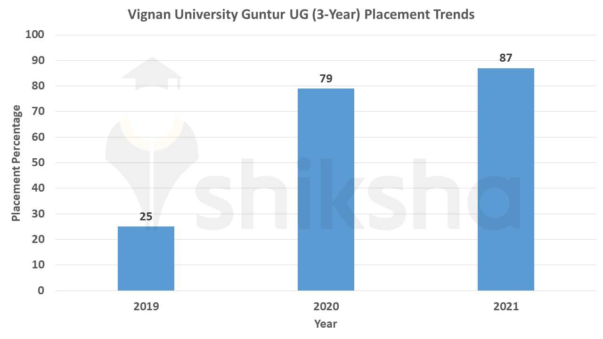

Placements!!
The credo of the Training and Placement department is to incorporate a wide range of relevant learning opportunities that support and develop students at different stages of their academics.>
In order to execute this effectively, the placement cell collaborates with a number of Industries and Companies across various sectors. This helps in identifying the training needs and accordingly, training programs are facilitated to students. The main focus of the department is to train the students and to bestow them with the right opportunities for their careers.

Training
A meticulously designed training program aimed at improving communication, technical and organizing skills cater to the needs and students of various standards and requirements. In fact, these training requirements are spread through the entire course curriculum so that the students are continuously triggered either for placements or for higher studies.


| Year | Objective of Training |
|---|---|
| 1st Year | 1) Awareness of career options 2) Social skills 3) Communication and presentation skills 4) Confidence building |
| 2nd Year | 1) Awareness on Industry functioning 2) Work place technologies 3) Fundamental certifications |
| 3rd Year | 1) Campus Recruitment Training/GRE/GATE 2) Professional Certifications 3) Strengthening of Technical Skills 4) Exposure to Industrial functioning through External experts |
| 4th Year | 1) Mock Drives 2) Company Specific Training Programs for Placements |